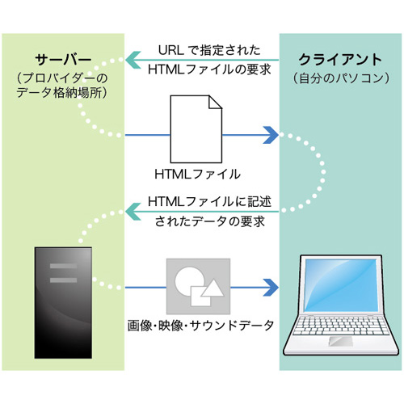
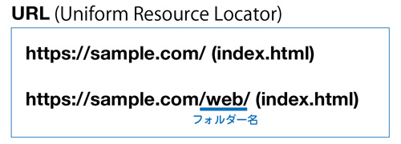
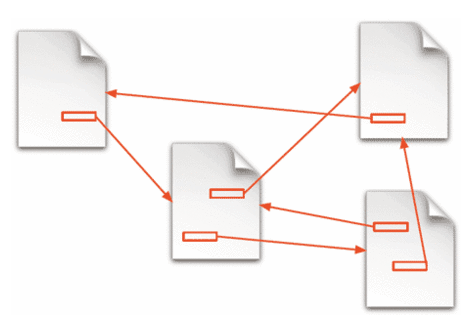

Webページを表示する仕組み

- インターネット（インターネット・プロトコルを利用して、相互に接続されたコンピューターネットワーク）
- プロトコル（コンピュータが通信する際の決まり）
- WWW（World Wide Web、インターネット上のハイパーテキストシステム）
- ハイパーテキスト（他の文書の位置情報を埋め込み、つなげる仕組み）
HyperText Transfer Protocol（http）
- WebブラウザとWebサーバの間でHTMLなどのコンテンツの送受信に用いられる通信プロトコル
- 3分間 NetWorking
Webページ
- Webにおける文書（基本的には、テキストデータ）の単位
- １ページあたりの分量はページごとに異なる
- ひとつのWebページに URL（Uniform Resource Locator）が対応する
- ブラウザのアドレスバーに URL を入れてアクセス
- Webページの中には、テキスト（文字）・画像・音声・動画といったコンテンツが含まれる
URL
- URLは、Webページのアドレスです
- 一般的には、Webサイトのトップページ・カテゴリのトップページは「index.html」として作成し、表示では省略されます

Webページの実体
- ある規則に従って記述されたテキストファイル（HTMLドキュメント）
- メモ帳などテキストエディタで編集可能
- 特定の編集ソフトを必要としない
- その規則さえ分かればWebページを作成できる

🌐 Webの基礎知識まとめ
- プロンプト例
Webの基礎知識について解説して
1. Webとは何か？
Web（World Wide Web） とは、インターネット上で情報を閲覧・共有する仕組み のことです。
- ブラウザ（Chrome / Safari / Edge など）を使ってWebページを表示・操作する
これが「Webを使う」ということです。
2. インターネットとWebの違い
| 用語 | 意味 |
|---|---|
| インターネット | 世界中のコンピュータがつながる通信ネットワーク |
| Web | インターネット上で情報を閲覧するサービスの1つ |
👉 Webはインターネットの上で動く仕組み
3. Webの仕組み（基本構造）
クライアントとサーバ
あなた（ブラウザ） → Webサーバ → レスポンス → 画面表示
- クライアント：あなたのPC / スマホ + ブラウザ
- サーバ：Webページのデータを保存しているコンピュータ
【流れ】
- URLにアクセス
- ブラウザがサーバにリクエスト
- サーバがHTMLなどを返す
- ブラウザが画面表示
4. URL・ドメイン・IPアドレス
URL（Webアドレス）
https://www.google.com/
【構成】
- https → 通信ルール（プロトコル）
- www.google.com → ドメイン名
- / → パス（ページの場所）
ドメインとIP
- ドメイン：人間用の住所（google.com）
- IPアドレス：コンピュータ用の住所（142.250.196.14 など）
👉 DNS が名前 → IP に変換
5. Webを作る3大技術
① HTML（構造）
文章の骨組みを作る→ 見出し、段落、画像、リンクなど
<h1>タイトル</h1> <p>文章</p>
② CSS（見た目）
デザインを整える→ 色、配置、サイズ、フォントなど
h1 { color: red; }
③ JavaScript（動き）
動的な処理→ ボタン動作、アニメーション、入力チェックなど
alert("こんにちは");
6. 静的サイトと動的サイト
| 種類 | 内容 |
|---|---|
| 静的サイト | 常に同じ内容（企業HP、紹介ページ） |
| 動的サイト | ユーザーごとに内容変化（SNS、ECサイト） |
【例】
- 静的：会社紹介ページ
- 動的：Amazon、YouTube、X、Instagram
7. HTTPとHTTPS
| 種類 | 説明 |
|---|---|
| HTTP | 通常通信 |
| HTTPS | 暗号化通信（安全）🔒 |
8. フロントエンドとバックエンド
| 分野 | 内容 |
|---|---|
| フロントエンド | 画面側（HTML/CSS/JS） |
| バックエンド | 裏側処理（DB・ログイン・APIなど） |
9. Web開発の全体構造（ざっくり）
画面 → フロントエンド → API → バックエンド → データベース
10. これから学ぶと良い順番（初心者向け）
- HTML
- CSS
- JavaScript
- Git / GitHub
- バックエンド（Python / PHP / Node.js など）